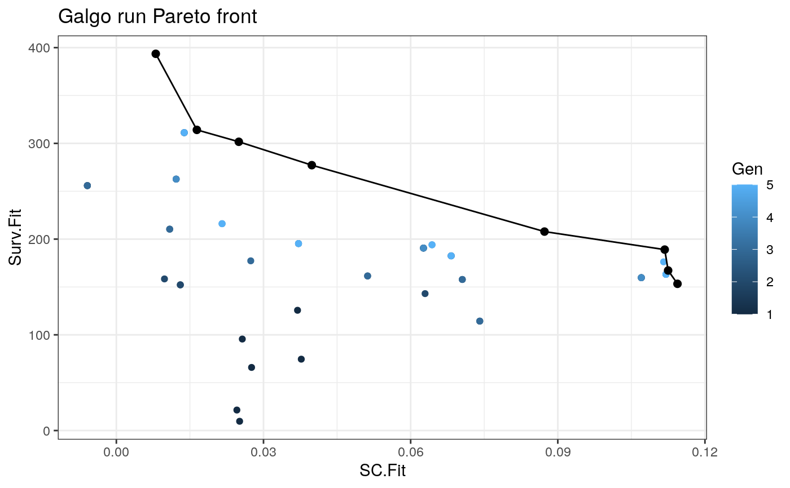

Plot pareto front from an galgo.Obj
plot_pareto(output)
| output | An object of class |
|---|
This function returns a scatterplot showing the solutions found by Galgo accross all generations in the solution space, where the Silhouette Fitness is in the x-axis and the survival fitness in the y-axis. A line is drawn over all non-dominated solutions showing the estimated Pareto front
#> Warning: object 'transbig' not foundexpression <- Biobase::exprs(Train) clinical <- Biobase::pData(Train) OS <- survival::Surv(time = clinical$t.rfs, event = clinical$e.rfs) # We will use a reduced dataset for the example expression <- expression[sample(1:nrow(expression), 100), ] # Now we scale the expression matrix expression <- t(scale(t(expression))) # Run galgo output <- galgoR::galgo(generations = 5, population = 15, prob_matrix = expression, OS = OS)#>#>#> k rnkIndex CrowD #> result.3 8 0.008032105 393.5728 1 Inf #> result.4 2 0.107028979 159.7093 1 Inf #> result.9 3 0.062615068 190.5994 1 1.485737#>#> k rnkIndex CrowD #> result.3 8 0.008032105 393.5728 1 Inf #> result.4 2 0.107028979 159.7093 1 Inf #> result.15 4 0.039845463 277.2249 1 0.7459856 #> result.13 10 0.013840014 311.1867 1 0.5847601 #> result.9 3 0.062615068 190.5994 1 0.4983246 #> result.7 3 0.068259214 182.5032 1 0.4737165#>#> k rnkIndex CrowD #> result.3 8 0.008032105 393.5728 1 Inf #> 2 0.112051394 163.1679 1 Inf #> result.15 4 0.039845463 277.2249 1 0.7213814 #> result.13 10 0.013840014 311.1867 1 0.5667686 #> result.7 3 0.068259214 182.5032 1 0.4891259 #> result.9 3 0.062615068 190.5994 1 0.4827297#>#> k rnkIndex CrowD #> result.3 8 0.008032105 393.5728 1 Inf #> 2 0.114401326 153.2837 1 Inf #> result.15 4 0.039845463 277.2249 1 0.6030124 #> 3 0.064355189 194.0444 1 0.4787716 #> result.7 3 0.068259214 182.5032 1 0.4688120 #> 2 0.112492725 167.2178 1 0.4583558 #> 8 0.016415191 314.0912 1 0.3761686 #> 7 0.024964997 301.6537 1 0.2891682#>#> k rnkIndex CrowD #> result.3 8 0.008032105 393.5728 1 Inf #> 2 0.114401326 153.2837 1 Inf #> 2 0.087283673 207.8368 1 0.8643172 #> result.15 4 0.039845463 277.2249 1 0.7930920 #> 8 0.016415191 314.0912 1 0.3852060 #> 2 0.111798727 189.0180 1 0.3276373 #> 7 0.024964997 301.6537 1 0.3022539 #> 2 0.112492725 167.2178 1 0.1144067plot_pareto(output)